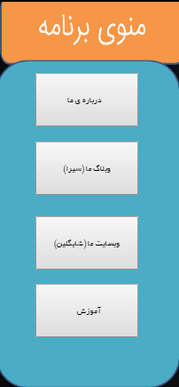
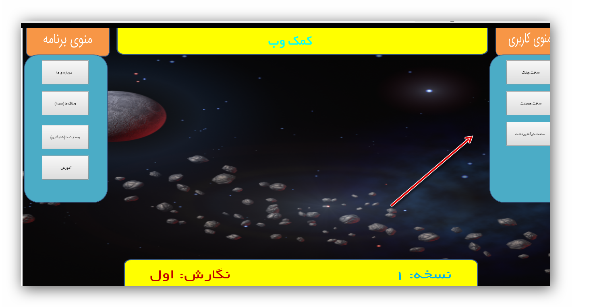

سلام
امیدوارم حالتون خوب باشه و بهتون خوش بگذره
این صفحه مربوط میشه به نرم افزار
کمک وب
خب بریم سراغ آموزش:
(البته نرم افزار آموزش زیادی نمیخواهد)
اوّل بریم سراغ معرفی قسمت ها
قسمت سمت چپ نرم افزار

این قسمت مربوط میشه به تنظیمات و..خود برنامه !
و نیاز به توضیح خاصی هم ندارد
قسمت سمت راست نرم افزار

خب این قسمت هم قسمت آموزش ها و... است ! یعنی همان جای اصلی
خب قسمت مهم
قسمت آموزش ها برای ویرایش آسان و کم شدن حجم و ...از روس سرور و با
ajax
بارگذاری میشه و سرعت بارگذاری به سرعت اینترنت شما بستگی دارد پس صبور باشید !
پیشنهاد میشود هنگام بارگذاری مطالب جای دیگری نروید.برای مثال وقتی منتظرید تا آموزش ساخت درگاه پرداخت باز شود به قسمت های دیگر نروید!
خب دیگه فکر کنم همه رو گفتم ولی اگه هر چی خواستین میتونین
بپرسید.